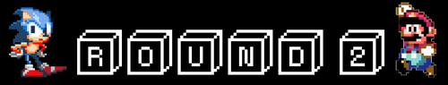
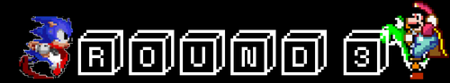
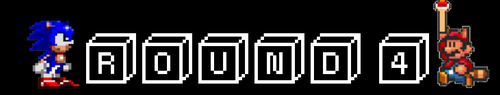
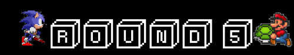
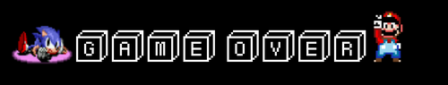

Tout commence en 1990, la console MegaDrive (appelé aussi Genesis) de SEGA vient de dépasser les ventes de celle de la Pc-Engine de NEC. Reste un opposant au sommet du podium, Nintendo avec sa NES qui est loin devant.
A cette époque, Nintendo était déja parfaitement ancré dans le milieu du jeu vidéo avec sa mascotte Mario.
SEGA organise donc un concours au sein de son équipe pour choisir une nouvelle mascotte qui pourra rivaliser avec celle de Nintendo. Sonic a donc été conçu d'une façon totalement opposé à Mario, que ce soit au niveau du concept (vitesse), qu'au niveau de son design plus "cool" et moderne. Sega sort en 1991 "Sonic the hedgehog" pour contrer la proche sortie de la nouvelle console de Nintendo la Super NES, le jeu rencontra un succès sans précédant.
Nintendo ne se laissant pas démanteler, sort sa super NES avec un nouveau jeu Mario "Super Mario World". Sega réplique avec des slogans tel que "Genesis does what Nintendon't" et des publicités abondantes car la console de SEGA était plus performante techniquement.
Mais Nintendo contre attaque en sortant des jeux mythiques tel que "Star Wing" qui inaugure la 3D, "the Legend of Zelda : a Link to the Past" qui possède un univers recherché, Super Metroid et bien d'autres. Sega sort alors "Sonic the hedgehog 2" en 1992 qui fut vendu à un chiffre énorme de 6 millions cartouches, ce qui pousse Nintendo a sortir "Super Mario All Stars" une compilation des jeux Mario avec une amélioration graphique.
Lorsque le jeu "Mortal Kombat" sort sur console, Nintendo censure certains éléments du jeu, jugés trop violents, tandis que SEGA permet aux joueurs d'y accéder via un code. Raison de plus pour les joueurs de se rallier du coté de SEGA. C'est pourquoi, lorsque Mortal Kombat II arriva sur console, Nintendo changea de politique et ne censura rien.
Lorsque viennent les années 2000 et que la fin de l'ère 16 bits se dessine, une nouvelle génération de console voit le jour qui marque le passage des jeux à la 3D. Nintendo s'en sort parfaitement bien avec sa "Nintendo 64" qui marqua les esprits, alors que SEGA n'arrive plus à suivre la cadence car sa nouvelle console, la "DreamCast" sort en meme temps que la "PlayStation 2" et se trouve alors étouffer par celle-ci. C'est donc en 2001 que SEGA décide de se retirer du marché des consoles pour se consacrer exclusivement à la fabrication de jeux.
A l'heure actuelle des jeux SEGA sorte sur console Nintendo et on peut voir Sonic apparaitre dans des jeux Nintendo auprès de Mario, ce qui signe clairement la défaite de Sega (ou la réconciliation pour certains) face à Nintendo.
Lien des articles :
- Youtube
- Planète Sonic
- Guerre des consoles
- Gameblog